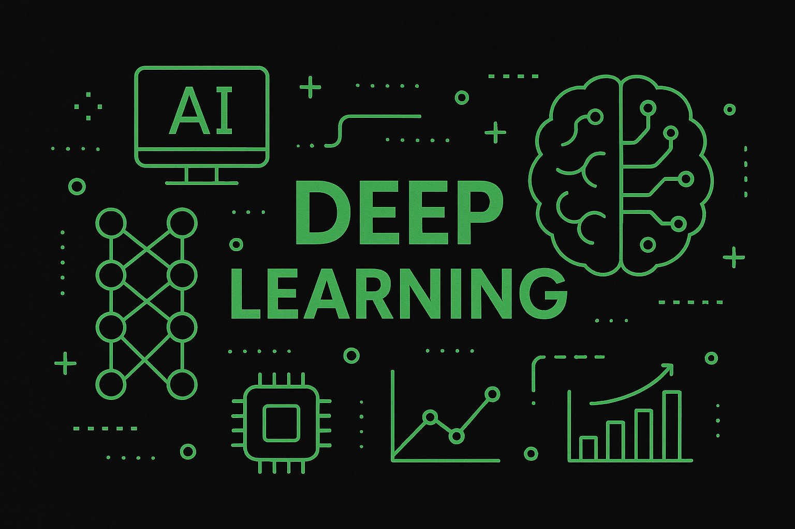

Machine Learning e Deep Learning
Explore os fundamentos da Inteligência Artificial que está transformando o mundo.
Começar a AprenderO que é Machine Learning?

O machine learning (ML) é o subconjunto da inteligência artificial que se concentra na construção de sistemas que aprendem e são aprimorados à medida que consomem mais dados. A inteligência artificial é um termo amplo que se refere a sistemas ou máquinas que imitam a inteligência humana. O machine learning e IA são frequentemente abordados juntos, e os termos às vezes são usados de forma intercambiável, mas não significam a mesma coisa.
Resumindo, todo machine learning é IA, mas nem toda IA é machine learning.
Machine Learning Explicada
O machine learning é uma técnica que descobre relacionamentos até então desconhecidos em dados pesquisando conjuntos de dados potencialmente muito grandes para descobrir padrões e tendências que vão além da simples análise estatística. O machine learning usa algoritmos sofisticados que são treinados para identificar padrões em dados, criando modelos. Esses modelos podem ser usados para fazer previsões e categorizar dados.
Observe que um algoritmo não é o mesmo que um modelo. Um algoritmo é um conjunto de regras e procedimentos usados para resolver um problema específico ou executar uma tarefa específica, enquanto um modelo é a saída ou resultado da aplicação de um algoritmo a um conjunto de dados.
Antes do treinamento, você tem um algoritmo. Após o treinamento, você tem um modelo.
Por exemplo, o machine learning é amplamente usado em assistência médica para tarefas que incluem análise de imagens médicas, análise preditiva e diagnóstico de doenças. Modelos de machine learning são ideais para analisar imagens médicas, como exames de ressonância magnética, raios-X e tomografia computadorizada, para identificar padrões e detectar anormalidades que podem não ser visíveis ao olho humano ou que um profissional de saúde sobrecarregado pode não perceber. Os sistemas de machine learning também podem analisar sintomas, informações genéticas e outros dados de pacientes para sugerir testes para doenças como câncer, diabetes e problemas cardíacos.
Tipos de Machine Learning
Existem quatro tipos principais de machine learning. Cada um tem seus próprios pontos fortes e limitações, tornando importante escolher a abordagem certa para a tarefa em questão.
-
machine learning supervisionado
O aprendizado supervisionado treina um algoritmo com dados já rotulados para que ele aprenda a fazer previsões. Pense em um filtro de spam: ele aprende com e-mails já marcados como "spam" ou "não spam" para poder identificar novos e-mails. A rotulação inicial dos dados é feita por humanos, o que é crucial para o processo.
-
machine learning não supervisionado
Emprega uma abordagem mais independente, na qual um computador aprende a identificar processos e padrões complexos sem depender de dados previamente rotulados. O machine learning não supervisionado não envolve apenas treinamento com base em dados que não têm rótulos. Também não há saída específica e definida, como se um email é provavelmente spam.
-
machine learning semi-supervisionado
O aprendizado semi-supervisionado usa poucos dados rotulados e muitos não rotulados. Ele treina o modelo inicialmente com os dados rotulados e, em seguida, o próprio modelo classifica os dados sem rótulo, aprendendo e se aprimorando continuamente.
-
machine learning por reforço
O aprendizado por reforço é um método que treina um algoritmo para alcançar um objetivo por tentativa e erro. O algoritmo recebe feedback (recompensa ou punição) a cada ação e aprende a tomar decisões que o levem ao melhor resultado final, mesmo que isso signifique aceitar perdas no caminho, como em um jogo de xadrez.
O que é Deep Learning?
O deep learning é um subconjunto do aprendizado de máquina que usa redes neurais de várias camadas, chamadas de redes neurais profundas, para simular o complexo poder de tomada de decisão do cérebro humano. Alguma forma de deep learning alimenta a maioria das aplicações de inteligência artificial (IA) em nossas vidas atualmente.
A principal diferença entre deep learning e aprendizado de máquina é a estrutura da arquitetura da rede neural subjacente. Os modelos tradicionais de aprendizado de máquina “não profundos” utilizam redes neurais simples com uma ou duas camadas computacionais. Os modelos de deep learning usam três ou mais camadas (normalmente centenas ou milhares delas) para treinar os modelos.
Como o deep learning funciona?
O aprendizado profundo é desenvolvido por camadas de redes neurais, que são algoritmos modelados livremente no modo como os cérebros humanos funcionam. O treinamento com grandes quantidades de dados é o que configura os neurônios na rede neural. O resultado é um modelo de aprendizado profundo que, uma vez treinado, processa novos dados. Os modelos de aprendizado profundo absorvem informações de várias fontes de dados e analisam esses dados em tempo real, sem a necessidade de intervenção humana. No aprendizado profundo, as unidades de processamento gráfico (GPUs) são otimizadas para modelos de treinamento porque podem processar vários cálculos simultaneamente.
O aprendizado profundo é o que impulsiona muitas tecnologias de inteligência artificial (IA) que podem melhorar a automação e as tarefas analíticas. A maioria das pessoas encontra aprendizado profundo todos os dias quando navega na internet ou usa seus telefones celulares. Entre inúmeras outras aplicações, o aprendizado profundo gera legendas para vídeos do YouTube, executa o reconhecimento de fala em telefones e alto-falantes inteligentes, fornece reconhecimento facial para fotografias e habilita carros autônomos. E à medida que cientistas de dados e pesquisadores lidam com projetos de aprendizado profundo cada vez mais complexos - aproveitando estruturas de aprendizado profundo - esse tipo de inteligência artificial se tornará cada vez mais uma parte maior do nosso dia a dia.
Tipos de Machine Learning
Existem vários tipos de arquiteturas de deep learning, cada uma otimizada para diferentes tipos de problemas. As mais comuns são:
-
Redes Neurais Convolucionais (CNNs)
As CNNs são a escolha ideal para o processamento de dados com uma estrutura de grade, como imagens e vídeos. Elas funcionam usando camadas convolucionais que extraem características importantes, como bordas e texturas, preservando a relação espacial entre os pixels.
São usadas em: reconhecimento facial, detecção de objetos, análise de imagens médicas e veículos autônomos.
-
Redes Neurais Recorrentes (RNNs)
As RNNs são projetadas para trabalhar com dados sequenciais ou séries temporais, como texto e áudio. Elas se destacam por terem uma "memória" que lhes permite usar informações de etapas anteriores para processar a informação atual.
São usadas em: tradução automática, reconhecimento de voz, geração de texto e legendagem de vídeos.
-
Redes Neurais Geradoras Adversariais (GANs)
As GANs são um tipo de rede neural que consistem em duas partes que competem entre si: um gerador e um discriminador. O gerador cria novos dados (como imagens falsas) e o discriminador tenta diferenciar se os dados são reais ou criados pelo gerador. Esse "jogo" melhora continuamente a qualidade das imagens geradas.
São usadas em: geração de imagens, transferência de estilo artístico, criação de avatares virtuais e aumento de dados para treinamento de outros modelos.